4420OB REAR SUSPENSION CORRECT TIGHTENING CHECK
- Path
- Test > 44 SUSPENSION AND WHEELS > 4420 REAR SUSPENSION > 4420O REAR SUSPENSION TESTS > 4420OB REAR SUSPENSION CORRECT TIGHTENING CHECK
- Kind
- test / check procedure
- Applies to
- all engines; all production periods
- Interactive page
- https://sloeber94.github.io/elrnDB-fCrm/en/#/194002298
Applies to: all engines; all production periods
Position the vehicle on a two column lift.
Using a torque wrench calibrated to the recommended value, check that the upper (1a) and lower (1b) shock absorber fixing nuts are tightened to the torque given below.
Type of fastening | Component | Torque (daNm) | |
|---|---|---|---|
1a | Bolt M12 | Bodyshell | 9 |
1b | Bolt M14 | Steering knuckle | 15 |
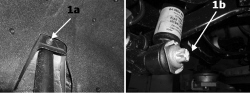
Applies to: all engines; all production periods
Type of fastening | Component | Torque (daNm) + Angle (°) | |
|---|---|---|---|
2 | Bolt M12 | Bodyshell | 9 + 90° |
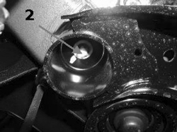
Applies to: all engines; all production periods
Visually check that the yield point type bolts for the fastenings securing the anti-roll bar to the crossmember (3) have not loosened.
Type of fastening | Component | Torque (daNm) + Angle (°) | |
|---|---|---|---|
3 | Bolt M8 | Crossmember | 2,5 + 30° |
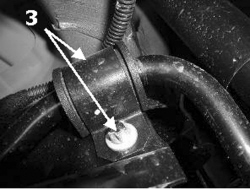
Applies to: all engines; all production periods
Visually check that the yield point type bolts for the fastenings securing the connecting rod to the bar (4a) and the connecting rod to the steering knuckle (4b) have not loosened.
Type of fastening | Component | Torque (daNm) + Angle (°) | |
|---|---|---|---|
4a | Bolt M10 | Anti-roll bar | 4,5 + 60° |
4b | Bolt M10 | Steering knuckle | 45, + 60° |
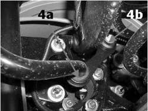
Applies to: all engines; all production periods
Visually inspect that the yield point type bolts for the fastenings securing the bracket for the longitudinal arm to the bodyshell (5a) and the arm to the bracket (5b) have not loosened.
Type of fastening | Component | Torque (daNm) + Angle (°) | |
|---|---|---|---|
5a | Bolt M12 | Bodyshell | 9 + 90° |
5b | Bolt M12X1.5 | Bracket | 9 + 60° |
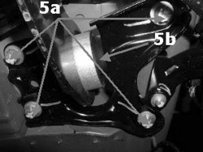
Applies to: all engines; all production periods
Using a torque wrench calibrated to the recommended value, check that the bolts fixing the longitudinal arm to the steering knuckle (6) are tightened to the recommended torque.
Type of fastening | Component | Torque (daNm) | |
|---|---|---|---|
6 | Bolt M14 | Steering knuckle | 15 |
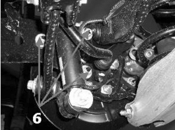
Applies to: all engines; all production periods
Visually check that the yield point type bolts for the fastenings securing the upper transverse arm to the crossmember (7a) and the upper transverse arm to the steering knuckle (7b) have not loosened.
Type of fastening | Component | Torque (daNm) + Angle (°) | |
|---|---|---|---|
7a | Bolt M12X1.5 | Crossmember | 9 + 60° |
7b | Bolt M14X1.5 | Steering knuckle | 15 + 45° |
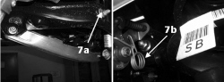
Applies to: all engines; all production periods
Visually check that the yield point type bolts for the fastenings securing the lower transverse arm to the crossmember (8a) and the large lower transverse arm to the steering knuckle (8b) have not loosened.
Type of fastening | Component | Torque (daNm) + Angle (°) | |
|---|---|---|---|
8a | Bolt M12X1.5 | Crossmember | 9 + 60° |
8b | Bolt M12X1.5 | Steering knuckle | 15 + 45° |
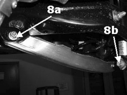
Applies to: all engines; all production periods
Visually check that the yield point type bolts for the fastenings securing the small lower transverse arm to the crossmember (9a) and the small lower transverse arm to the steering knuckle (9b) have not loosened.
Type of fastening | Component | Torque (daNm) + Angle (°) | |
|---|---|---|---|
9a | Bolt M12X1.5 | Crossmember | 9 + 60° |
9b | Bolt M14X1.5 | Steering knuckle | 15 + 45° |
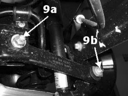
Applies to: all engines; all production periods
Using a torque wrench calibrated to the recommended value, check that the bolts fixing the brake caliper to the steering knuckle (10) are tightened to the torque given below.
Type of fastening | Component | Torque (daNm) | |
|---|---|---|---|
10 | Bolt M12 | Steering knuckle | 13 |
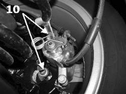
Applies to: all engines; all production periods
Visually inspect that the yield point type bolts fixing the steering knuckle to the hub (11) have not loosened.
Type of fastening | Component | Torque (daNm) + Angle (°) | |
|---|---|---|---|
11 | Bolt M10X1.25 | Hub | 9 + 60° |
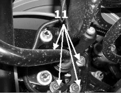